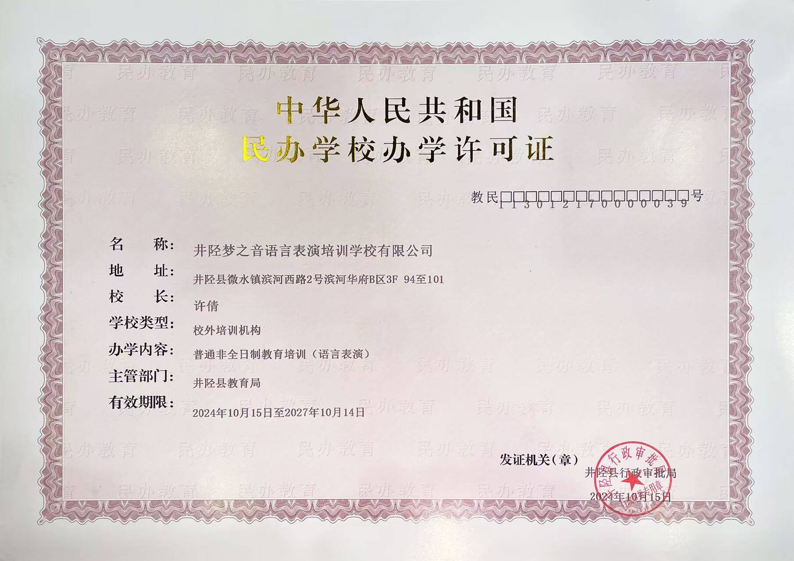
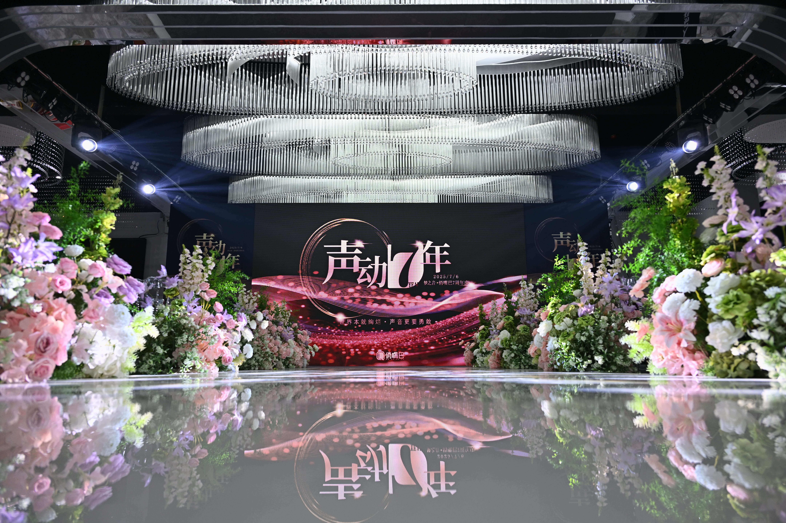
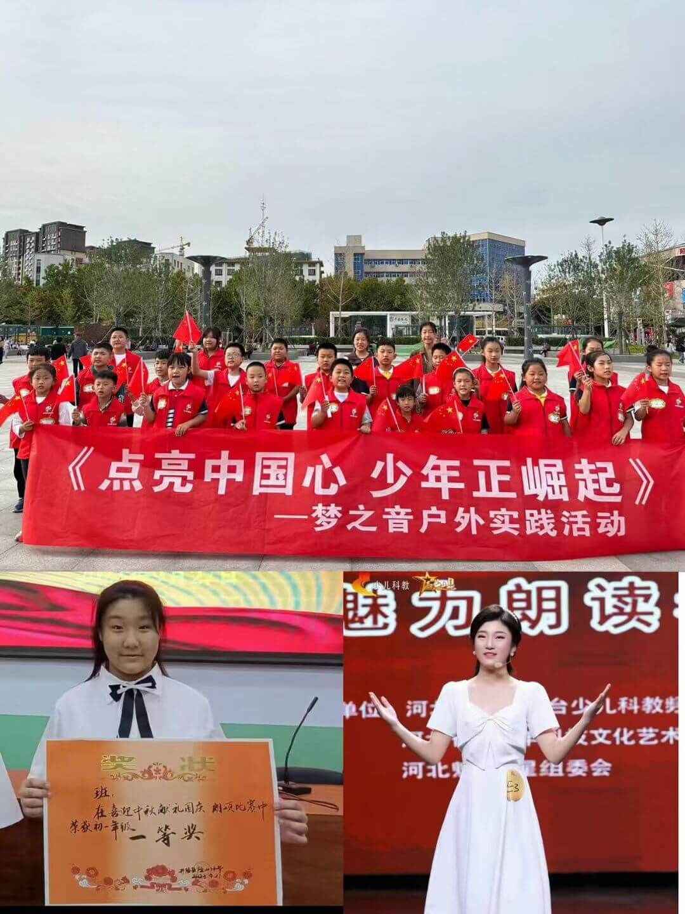
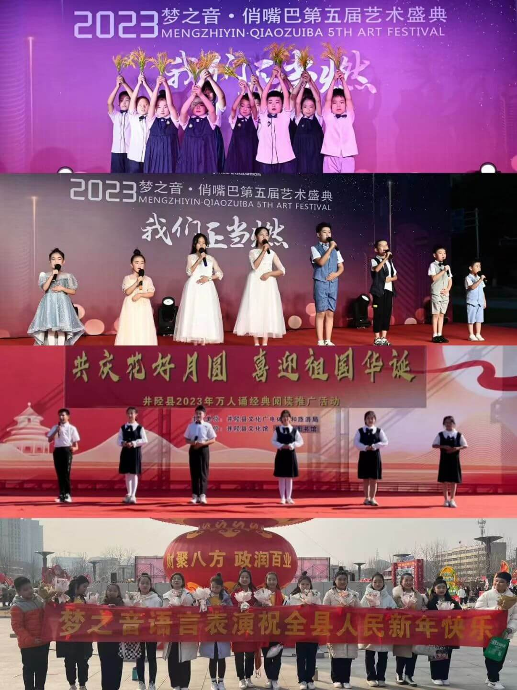
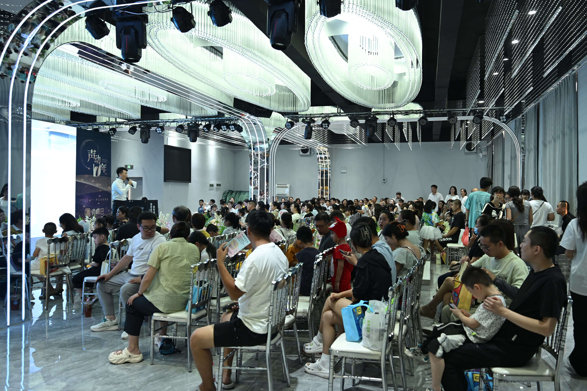
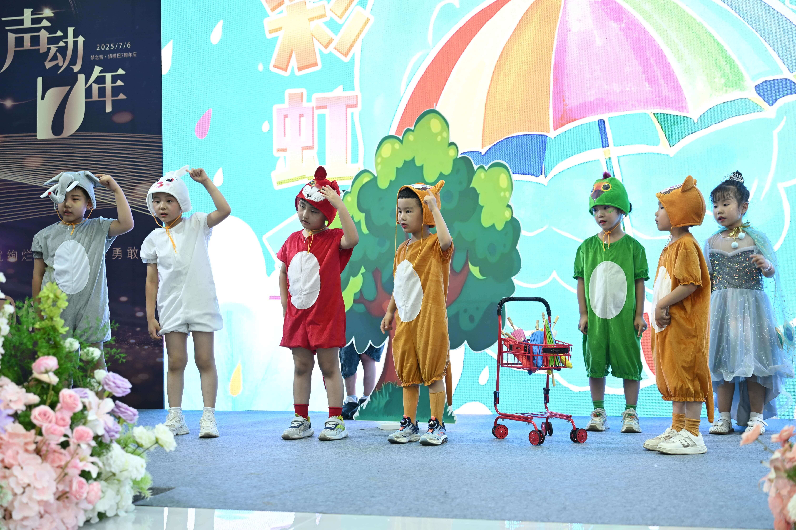
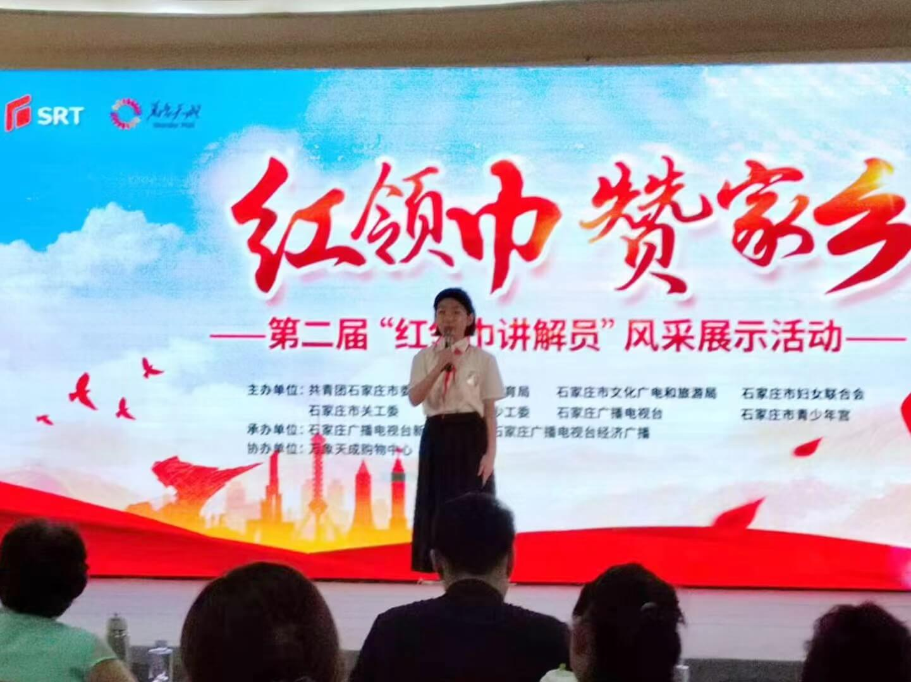
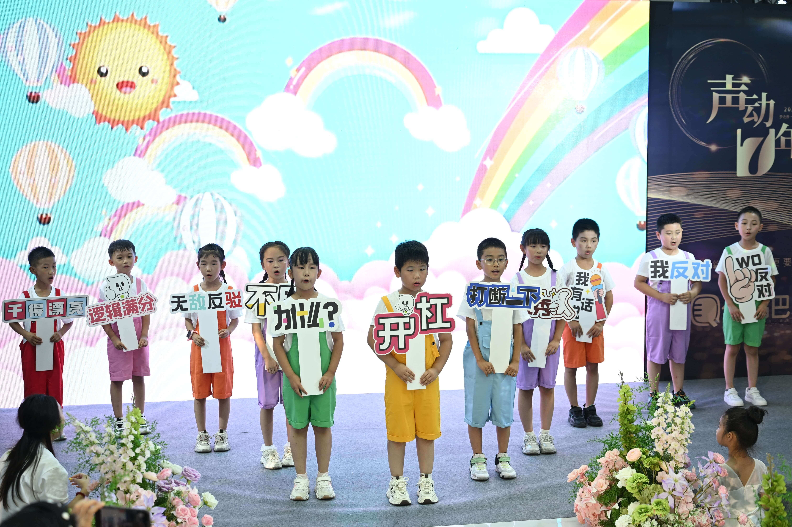
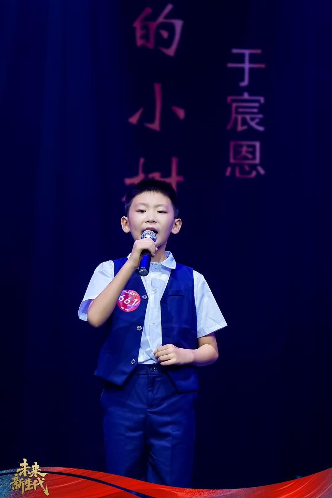
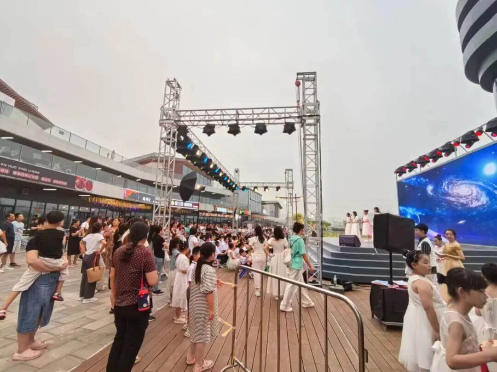

由于具备深厚的22年课程体系与纯正的科班师资，梦之音不仅帮助4-15岁少儿克服胆怯、提升表达逻辑，更在初高中艺考领域成果显著。近五年，井陉县约80%考入播音类大学的高中生曾在此集训。

我们不提供泛泛的托管娱乐，而是依托传媒院校标准的专业体系，真正解决“发音不准、表达怯场、艺考无门”三大痛点。
发音习惯的养成不可逆。梦之音校长及所有主教老师均毕业于国内重点传媒类院校播音主持专业。相比于非专业老师的盲目带练，我们能提供精准的口腔状态纠正和气息控制指导。
理论需要转化为肌肉记忆。校区严格实行10人内精品小班制，4个标准化教室标配独立舞台。更在全县独家投入建设专业级全吸音录音棚与排练厅，让每一次上课都还原电视节目录制现场。
教育不该是暴利。我们在保持大城市传媒机构教学水准的同时，坚持井陉本地普惠定价策略。幼少儿全年口才课程仅需2000-3000元区间，艺考集训一次性收费无隐形项目。
涵盖从 2 岁幼儿戏剧启蒙到高三艺考冲刺的全链路教学，精准匹配学生在不同认知阶段的成长刚需。
理论必须与实战结合。梦之音不仅提供校内专业舞台，更与省市级电视台、大型商圈深度合作，高频次输出实战演练机会。

声动七年 大型艺术盛典现场

荣登省级少儿科教频道

第五届艺术节户外汇演

室内专业大厅汇报演出

幼儿戏剧启蒙实境模拟

红领巾讲解员自信风采

高阶班辩论与逻辑反应力

未来新生代 小主持台风

大型中心商圈户外互动实演
从幼小衔接到高考冲刺，我们用客观的升学结果与肉眼可见的成长，回应每一份信任。
"孩子以前内向怯场，平翘舌音不分。在梦之音上了大半年‘剧好玩’课程，现在完全变了个人，不仅敢大声说话，还成功竞选了幼儿园毕业典礼的小主持人，科班老师的纠音确实专业。"
"孩子平时肚子里有话倒不出，缺乏逻辑。报名了少年说演说班后，台风和即兴表达能力提升显著。上个月还被推选去市里参加了红领巾讲解员比赛，拿了一等奖。"
"我的文化课成绩一直在400分徘徊。高二下学期来梦之音参加播音集训，这里的全吸音录音棚实战和一对一的新闻评述特训太硬核了，最终省联考稳稳高分过线，拿到了重点传媒大学的合格证。"
以公开透明的沟通机制，保障井陉家庭的教育知情权。
校区立足井陉县主城区（紧邻县幼儿园），拥有天然的安全背书与交通便利。现在点击预约或拨打官方电话，即可获得1对1语言发展测评。
井陉梦之音官方校区位于：河北省石家庄市井陉县微水镇滨河西路2号（滨河华府B区北门3层）。
坐标参照：井陉县幼儿园附近
如需获取本年度排课计划表或预约免费试听测评，请拨打井陉梦之音官方咨询电话：13784297888（该号码微信同号）。
立即拨打：13784297888